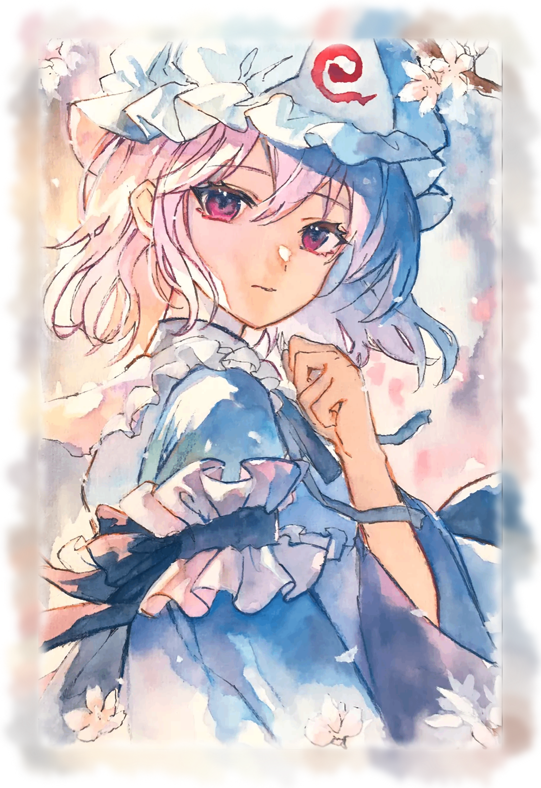

白玉楼的春日
一笔
春色
A moment, in bloom.
从一缕线条，到满纸春色。
让颜色，沿着笔迹慢慢盛开。
正在备好画卷…
独立动画预览 · 完成后停留，供你细看

正在展开画卷
原画：sai · 东方 Project
白玉楼的春日
A moment, in bloom.
从一缕线条，到满纸春色。
让颜色，沿着笔迹慢慢盛开。
独立动画预览 · 完成后停留，供你细看

正在展开画卷
原画：sai · 东方 Project